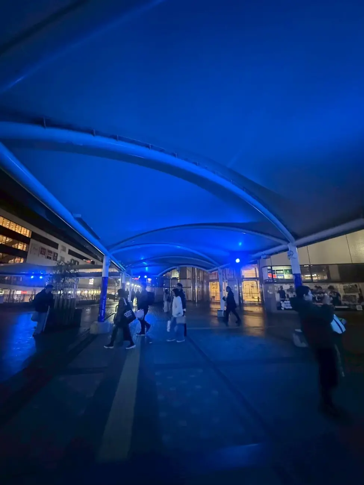

WARM BLUE
MACHIDA
青い光で、人と人をつなぐ。
WARM BLUE MACHIDA — 青い光で、人と人をつなぐ。
WARM BLUE
MACHIDA
青い光で、人と人をつなぐ。
WARM BLUE MACHIDA — 青い光で、人と人をつなぐ。
自閉症への理解を、町田から。
EVENT
VIEW ALL →
次のイベント
ひとつの青い光が、 街の景色を変えていく。
毎年4月2日は、世界自閉症啓発デー。
WARMBLUEmachidaは、
町田の街を青い光で彩りながら、
自閉症について知り、考え、
人と人がつながるきっかけをつくる活動です。
障害がある人も、ない人も。
一人ひとりが安心して暮らし、
それぞれの色で輝ける街へ。
BLUE IS A MESSAGE.
04.02WORLD AUTISM AWARENESS DAY
青には、想いがある。
毎年4月2日は「世界自閉症啓発デー」です。
世界各地で、建物やランドマークをブルーに照らし、自閉症への理解を広げる取り組みが行われています。
ブルーは、癒しや希望、そして自閉症への理解を象徴する色です。

ABOUT THE PROJECT
町田の街を、
町田の街を、
温かいブルーで
包む。
私たちは、自閉症とその周辺の課題について、より多くの人に理解を深めてもらうことを目的に活動する「WARMBLUEmachida実行委員会」です。
2024年、町田市で初めて「WARMBLUEmachida2024」を実施し、多くの皆様からご支援と共感をいただきました。


LIGHT UP THE CITY. LIGHT UP THE FUTURE.
街を照らすことは、
街を照らすことは、
未来を照らすこと。
このプロジェクトでは、町田市内のさまざまな場所をブルーにライトアップし、夜空に青い花火を打ち上げます。
ブルーライトと青い花火を、障害がある人もない人も一緒に楽しみながら、「互いに住みやすく、輝ける街・町田」という希望のメッセージを届けます。
EXPLORE
青い光を、
青い光を、
もっと近くで。


STORY
WARMBLUE
すべての記事を読む →
WARMBLUE
STORY
ひとつの光が、誰かの理解につながる。 ひとつの理解が、街の未来を変えていく。 青い光で、人と人をつなぐ。
WARMBLUE MACHIDA